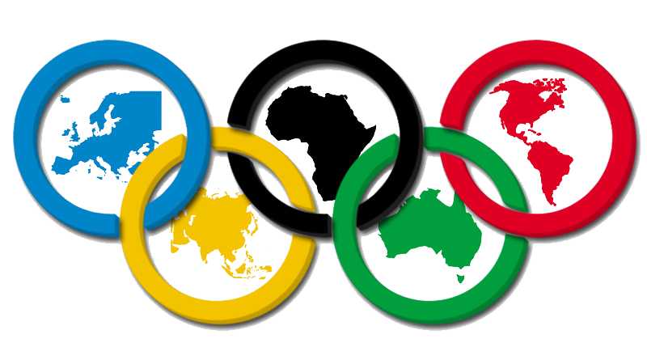
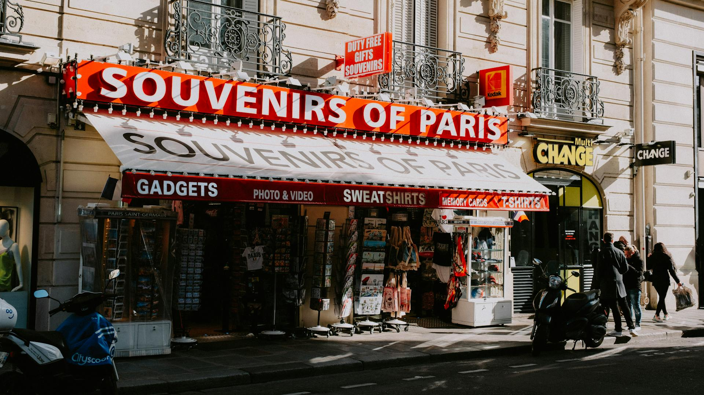
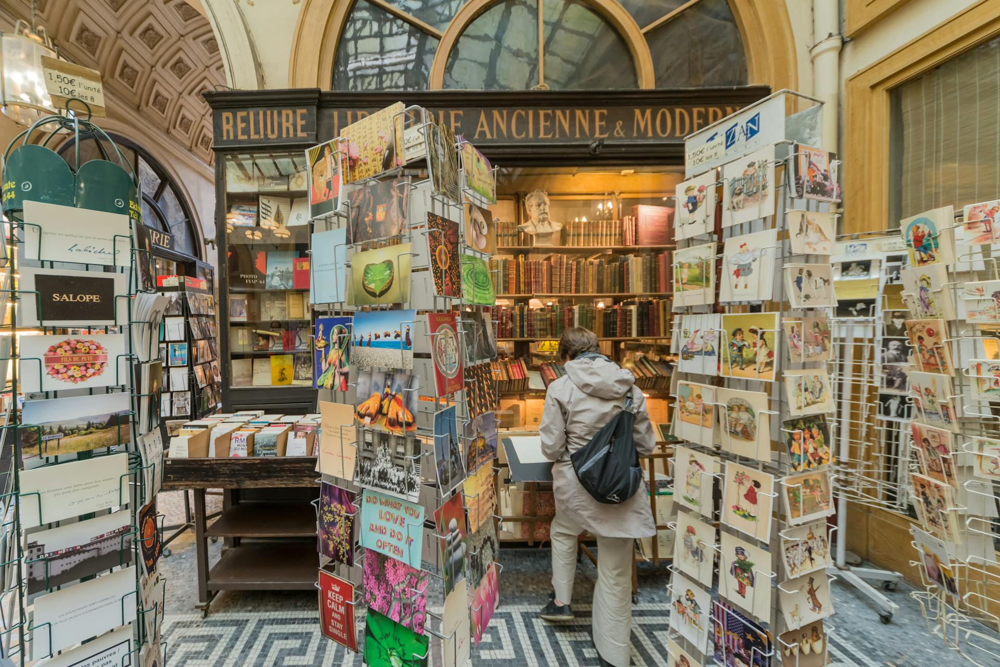
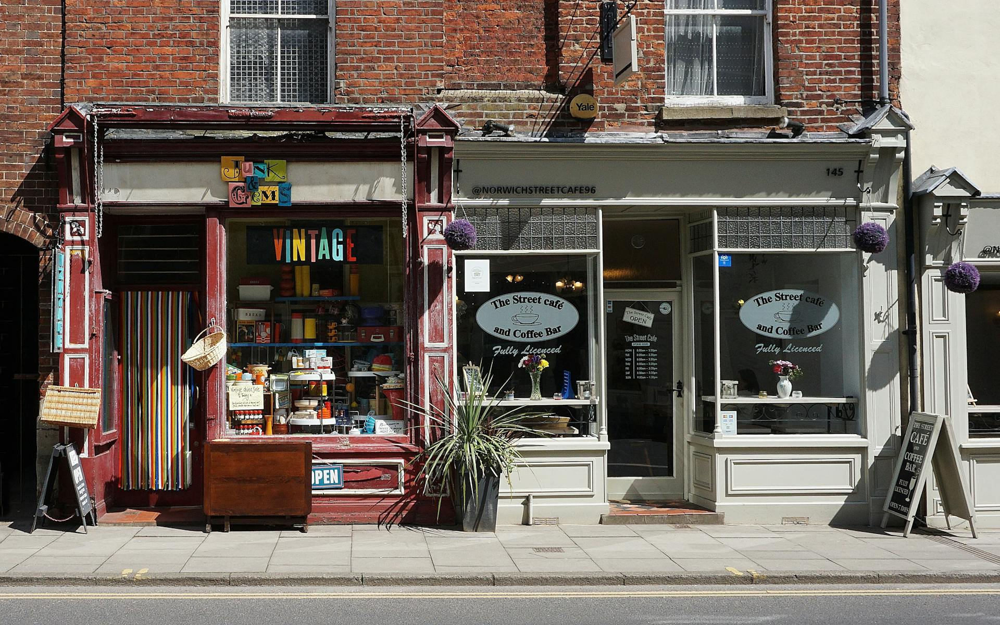
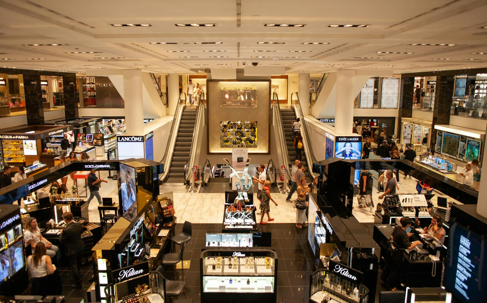

Olympic Games Paris 2024
-
26 July - 11 August, 2024

00
Days
00
Hours
00
Minutes
00
Seconds
PLAN YOUR STAY
Where to stay?
PLAN YOUR TRIP
Getting around Paris
Start Point:
End Point:
Driving
Directions
FOOD & DRINKS
Where to get the best food?
Experience Paris's diverse culinary scene, from charming cafes offering buttery croissants
to Michelin-starred restaurants serving exquisite haute cuisine. Whether you crave traditional French
delicacies or modern interpretations, the vibrant dining scene promises to be a highlight of your visit,
showcasing the city's renowned gastronomic traditions.
SHOP
Where to treat yourself?
In the collective imagination, shopping in Paris is all opulent department stores and upscale boutiques
dotting the grand avenues—and that's certainly part of the experience. Paris is a shopping destination
meant for every taste and budget.
The Golden Triangle
This affluent section of the 8th arrondissement could easily be considered the city's
luxury hub—home to haute couture behemoths like Dior, Louis Vuitton, Hermès, Chanel, and
Balenciaga. As the Champs-Elysées continues to move upscale, new additions line the ritzy
avenue. Its most recent tenant is the Galeries Lafayette Champs-Elysées, the family-run
retail group's outpost for its new concept store.


Hermès
Inaugurated in 2018, the Hermès flagship in the Golden Triangle was renovated with great
detail over two years. The shop now spans three levels and has 5,900 square feet of retail
space. But what makes this particular location special are the wood-paneled façade and the
gilded lettering on its unmistakable sign—both now beautifully restored. Inside, the design
mixes airy and contemporary touches (gray-blue marble, mosaic floors) with traditional
details
Guerlain
No Guerlain store has the history of the perfumer's iconic outpost on the Champs-Elysées.
The interior was revamped by architect Peter Marino five years ago, and today it features an
array of Guerlain motifs, from golden Napoleonic bees to the Louis XIV sunburst emblem that
has long adorned face powder compacts. Philippe Starck chandeliers offset mirrored ceilings
and deep golden and mahogany tones in one room, while resin-coated table collages by Peter
Dayton offer a splash of color in the café.


Le Marais
Forever the flâneur's destination, this pocket of Paris has also shaped up to be a
must-stop on any shopping itinerary. Meander up and down the neighborhood's narrow streets
and you'll find sanctuaries to hand-crafted goods and natural beauty products, and a
design-focused concept store that never ceases to reinvent itself.
NEWS HUB
Happenings in the city center
TOP FAQ's
Frequently Asked Questions
How to buy tickets for the Olympic Games Paris 2024?
Tickets for the Olympic Games Paris 2024 are available for spectators around the world only
on the official ticketing website. To buy tickets, click here.
The Paris 2024 Hospitality program offers packages that include tickets for sporting events
combined with exceptional services in the competition venues (boxes, lounges) or in the
heart of the city (accommodation, transport options, gastronomy, tourist activities, etc.).
The Paris 2024 Hospitality program is delivered by the official Paris 2024 Hospitality
provider, On Location.
For more information about the Paris 2024 Hospitality & Travel offers, click here.
What is the official mascot of the Olympic Games Paris 2024?
The Olympic Games Paris 2024 mascot is Olympic Phryge. The mascot is based on the traditional
small Phrygian hats for which they are shaped after.
The name and design were chosen as symbols of freedom and to represent allegorical figures
of the French republic.
The Olympic Phryge is decked out in blue, white and red - the colours of France’s famed
tricolour flag - with the golden Paris 2024 logo emblazoned across its chest.
What sports are in the Olympic Games Paris 2024?
3x3 Basketball
Archery
Artistic Gymnastics
Artistic Swimming
Athletics
Badminton
Basketball
Beach Volleyball
Boxing
Breaking
Canoe Slalom
Canoe Sprint
Cycling BMX Freestyle
Cycling BMX Racing
Cycling Mountain Bike
Cycling Road
Cycling Track
Diving
Equestrian
Fencing
Football
Golf
Handball
Hockey
Judo
Marathon Swimming
Modern Pentathlon
Rhythmic Gymnastics
Rowing
Rugby Sevens
Sailing
Shooting
Skateboarding
Sport Climbing
Surfing
Swimming
Table Tennis
Taekwondo
Tennis
Trampoline
Triathlon
Volleyball
Water Polo
Weightlifting
Wrestling
Where to watch the Olympic Games Paris 2024?
In France, the 2024 Olympic Games will be broadcast by Warner Bros. Discovery (formerly
Discovery Inc.) via Eurosport, with free-to-air coverage sub-licensed to the country's
public broadcaster France Télévisions. For a detailed list of the Paris 2024 Media Rights
Holders
here.
How many athletes compete in the Olympic Games Paris 2024?
Around 10,500 athletes from 206 NOCs will compete.
What year did the Olympic Games start?
The inaugural Games took place in 1896 in Athens, Greece.
FYI
Bottom Line
The public authorities’ message leaves no room for ambiguity: life will be complicated in Paris during
the Olympic and Paralympic Games, from July 26 to September 8, and even a little before. Complicated for
tourists and hellish for locals.
And it’s not even certain that businesses will benefit. While hotels and private rental companies are
likely to make their money, small shops, bars and restaurants are likely to have a bad summer.
The authorities’ message to Parisians is clear: “flee”. Maybe
tourists should do the same.